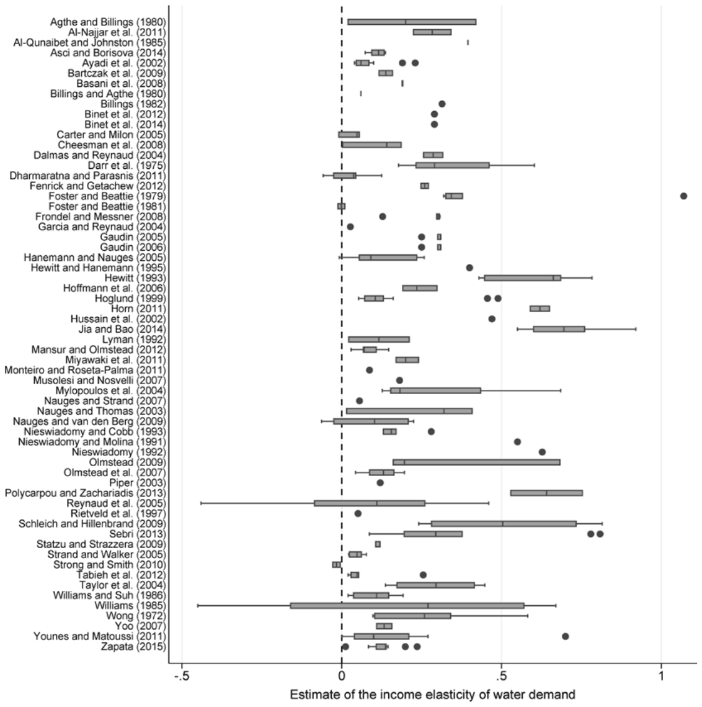
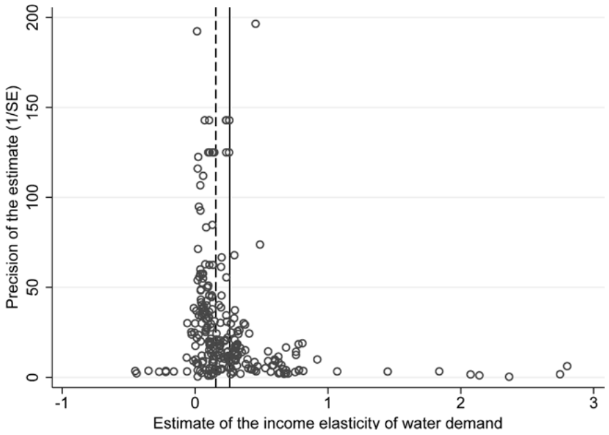
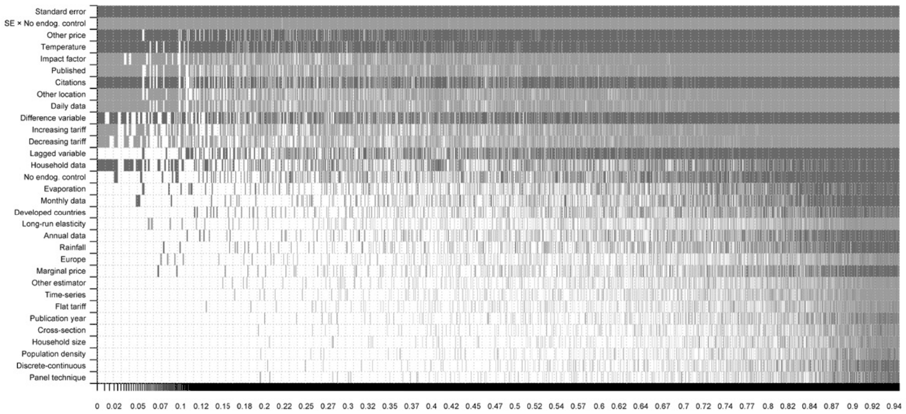

Measuring the Income Elasticity of Water Demand: The Importance of Publication and Endogeneity Biases
Tomas Havranek, Zuzana Irsova, and Tomas Vlach (2018), "Measuring the Income Elasticity of Water Demand: The Importance of Publication and Endogeneity Biases." Land Economics 94(2): 259-283. https://doi.org/10.3368/le.94.2.259.
Tomas Havranek Associate professor, Faculty of Social Sciences, Charles University, Prague, Czech Republic, and advisor to the board, Czech National Bank, Prague, Czech Republic
Zuzana Irsova Assistant professor, Faculty of Social Sciences, Charles University, Prague, Czech Republic
Tomas Vlach Graduate student, Faculty of Social Sciences, Charles University, Prague, Czech Republic
Appendix materials are freely available at http://le.uwpress.org and via the links in the electronic version of this article.
Abstract
We present the first study that examines the effects of publication selection in the literature estimating the income elasticity of water demand. Paradoxically, more affected by publication selection are the otherwise preferable estimates that control for endogeneity. Attempting to correct simultaneously for publication and endogeneity biases, we find that the mean underlying elasticity is approximately 0.15 or less. The result is robust to controlling for more than 30 characteristics of the estimates and accounting for model uncertainty. The differences in the reported estimates are systematically driven by differences in the tariff structure, regional coverage, data granularity, and control for temperature. (JEL C83, Q25)
1. Introduction
The growing scarcity of drinking water represents a major global risk (World Economic Forum 2015). To understand how the consumption of water will evolve when developing countries get richer, we need reliable estimates of the income elasticity of water demand. The parameter is also used by policy makers to design efficient and equitable environmental water policies. Researchers have long sought to pin down this crucial parameter but have yet to reach consensus. The two previous quantitative surveys conducted on this topic, by Dalhuisen et al. (2003) and Sebri (2014), put the representative estimate in the literature between 0.2 and 0.4 and focus on the drivers of heterogeneity in the reported income elasticities. Neither of these studies, however, corrects the literature for publication bias, and neither accounts for model uncertainty when explaining the heterogeneity behind the estimates. In this paper we collect 307 estimates of the income elasticity of water demand and analyze the variation behind these estimates, paying special attention to publication bias, endogeneity bias, and model uncertainty.
Publication bias arises from the tendency of researchers, editors, and referees to publish results that are either significant or have the desired sign. In theory, water is a necessity with no obvious substitutes; therefore, common sense dictates that its income elasticity should be positive and statistically significant. But if the underlying elasticity that we try to unearth is sufficiently small and our data and methods sufficiently imprecise, we should get negative or statistically insignificant estimates from time to time. If such estimates are underreported, publication bias arises. In a related study on the price elasticity of water demand, Stanley (2005) finds that publication bias exaggerates the estimates fourfold. The studies estimating the price elasticity of water demand typically also estimate the income elasticity, often in the same equation. This demonstrates the importance of accounting for publication selection.
The endogeneity problem in water demand equations (price is not exogenous to quantity) is well documented and has been explored by previous meta-analyses. Here we offer a twist to the typical story that estimates of the income elasticity taken from models accounting for price endogeneity are always preferable. This statement holds when no publication selection exists. But if publication selection constitutes a problem, as we show is the case, estimates based on instrumental variables give rise to more publication selection because they are typically (though not always) less precise than ordinary least squares (OLS) estimates and, in this particular case, also smaller. Researchers seeking to control for endogeneity while simultaneously providing estimates that are publishable (intuitive and statistically significant) are sometimes forced to pursue a lengthy search for the desired specification with a point estimate that is large enough to offset the standard error. It follows that OLS estimates are exaggerated by endogeneity bias, while instrumental variable (IV) estimates are exaggerated by publication bias, and the simple mean reported elasticities might not vary substantially between these two approaches.
Indeed, our results suggest that the income elasticity of water demand is, on average, biased upward due to publication bias and that the extent of bias is linked to the treatment of price endogeneity. Publication bias is absent from estimates produced by methods ignoring endogeneity (such as OLS). By contrast, while methods controlling for endogeneity (such as IV) report estimates that are hoped to be corrected for endogeneity bias, these estimates are correlated with their standard errors and collectively suffer from publication bias. As a result, although researchers address endogeneity bias at the level of individual studies, the resulting publication bias means that the mean reported estimate is not closer to the underlying value of the income elasticity. This interplay between the two biases is too complex for any narrative survey to decipher, and the use of meta-analysis is therefore crucial. The two biases cause the reported estimates to be similar for IV and OLS methods, which has led previous meta-analyses to conclude that trying to correct for price endogeneity, while theoretically laudable, has little practical effect on the income elasticity. We argue otherwise.
Furthermore, we collect 38 method and data characteristics that should help us explain the differences among the estimated elasticities. The large number of characteristics, however, means that we face model uncertainty, so we depart from the frequentist methods of the previous meta-analyses and instead apply Bayesian model averaging. Bayesian model averaging runs millions of regressions that include the possible subsets of the explanatory variables. Consequently, it constructs a weighted average over these regressions, where each weight is approximately proportional to the goodness of fit of the respective regression. The results of Bayesian model averaging enable us to construct a “best-practice” estimate in the literature conditional on numerous data and method choices, which is another value added by meta-analysis. It follows that the income elasticity of water demand is likely 0.15 or even less, smaller than usually perceived, and in any case the literature is inconsistent with values of the elasticity over 0.5.
2. The Data Set
To estimate the income elasticity of water demand, researchers usually employ a variant of the following model:
where denotes the water consumption of household i in period t, Price denotes the price of water, and Income denotes household income. The vector represents a set of explanatory variables j, such as household characteristics (the number of household members, distinction between primary and secondary residences, garden size, and the number of bathrooms) or climate variables (temperature, rainfall, and evaporation). The coefficient PED is the price elasticity of water demand; is the error term. The coefficient YED denotes the income elasticity, the effect in question of this meta-analysis, and captures by how many percent the demand for water changes if the household’s income increases by 1%. As in any other meta-analysis, we begin by collecting the reported estimates from the empirical literature. We exploit previously published meta-analyses by Dalhuisen et al. (2003) and Sebri (2014) and extend the data sample by searching the Google Scholar database.1 We add the last study on March 6, 2016.
To be included in the meta-analysis, the studies must conform to three criteria: (1) the study must estimate a water demand equation and report an empirical estimate of YED; (2) the study must estimate the log-log functional form of a demand equation, as in [1], to display a constant YED; and (3) the study must report a measure of uncertainty around the estimate, typically the standard error. Several studies do not conform to these criteria. For example, Saleth and Dinar (1997) do not use the straightforward income variable in the demand function but instead proxy for income using housing categories. Schefter and David (1985) estimate the level-level linear functional form of [1], while Gibbs (1978) and Jones and Morris (1984) estimate the semi-log functional form of [1]. Gaudin, Griffin, and Sickles (2001) and Nieswiadomy (1992) do not report standard errors for their estimates.
Our final data sample comprises 307 income elasticity estimates taken from 62 studies listed in Appendix Table A1. The oldest study was published in 1972 and the most recent one in 2015, which means this meta-analysis covers as long a period of time as the two previous meta-analyses combined. The apparently right-skewed distribution of estimates is shown in Appendix Figure A1. The reported elasticities range from −0.45 to 2.8 and are characterized by a mean of 0.26 and a median of 0.16. Less than 3% of the estimates are larger than 1, which suggests that the demand for water is inelastic with respect to income. More than 94% of the estimates are higher than 0, which supports the intuition that water is not an inferior good. The double-peaked-ness of the histogram indicates the presence of systematic heterogeneity in the estimates; moreover, Figure 12 reveals the presence of substantial within- and between-study variation. Consequently, for each estimate we collect more than 30 explanatory variables describing the characteristics of the estimation models and investigate the possible reasons for heterogeneity in Section 4.

To gain a first insight into the potential causes of heterogeneity, we compute mean values of the income elasticity estimates for different groups of data, methods, and publication characteristics. Table 1 reports the results for both unweighted estimates and estimates weighted by the inverse of the number of estimates per study, such that studies with many estimates do not drive the mean. We show that short-run elasticities are, on average, 0.1 larger than long-run elasticities. The difference, however, disappears when we give each study the same weight; hence, we do not further divide our sample between short- and the long-run elasticities but analyze the pooled data set while controlling for this difference (which is in accordance with the approach of the previous meta-analyses [Dalhuisen et al. 2003; Sebri 2014]). On the one hand, studies using data aggregated at the municipal level yield nearly identical estimates to studies that employ individual household data. On the other hand, the difference between the published and unpublished studies is robust to weighting and fluctuates around 0.1. Differences in results based on publication outlet often, although not necessarily, indicate the presence of publication bias in the literature, as we will discuss below.
| Number of Observations | Unweighted Mean | Unweighted 95% Confidence Interval | Unweighted 95% Confidence Interval | Weighted Mean | Weighted 95% Confidence Interval | Weighted 95% Confidence Interval | |
|---|---|---|---|---|---|---|---|
| Temporal Dynamics | |||||||
| Short-run elasticity | 216 | 0.291 | 0.233 | 0.348 | 0.274 | 0.221 | 0.326 |
| Long-run elasticity | 91 | 0.189 | 0.149 | 0.229 | 0.251 | 0.204 | 0.299 |
| Aggregation Level | |||||||
| Household data | 194 | 0.254 | 0.196 | 0.311 | 0.290 | 0.232 | 0.347 |
| Aggregate data | 113 | 0.273 | 0.214 | 0.332 | 0.235 | 0.184 | 0.286 |
| Publication Status | |||||||
| Unpublished studies | 66 | 0.347 | 0.212 | 0.482 | 0.366 | 0.241 | 0.492 |
| Published studies | 241 | 0.237 | 0.198 | 0.277 | 0.251 | 0.210 | 0.292 |
| Spatial Variation | |||||||
| United States | 136 | 0.324 | 0.239 | 0.410 | 0.327 | 0.243 | 0.411 |
| Europe | 51 | 0.261 | 0.202 | 0.321 | 0.251 | 0.195 | 0.307 |
| Other than United States or Europe | 120 | 0.188 | 0.149 | 0.227 | 0.212 | 0.172 | 0.251 |
| Developed countries | 201 | 0.295 | 0.235 | 0.356 | 0.291 | 0.234 | 0.348 |
| Developing countries | 106 | 0.195 | 0.154 | 0.236 | 0.219 | 0.177 | 0.262 |
| Estimation Technique | |||||||
| No endogeneity control | 142 | 0.268 | 0.213 | 0.322 | 0.282 | 0.225 | 0.340 |
| Endogeneity control | 165 | 0.255 | 0.191 | 0.319 | 0.260 | 0.203 | 0.317 |
| All estimates | 307 | 0.261 | 0.218 | 0.303 | 0.269 | 0.228 | 0.309 |
Note: The table reports mean values of the income elasticity estimates for different subsets of data. The exact variable definitions are available in Appendix Table A3. “Weighted” indicates that estimates are weighted by the inverse of the number of estimates per study.
Table 1 further suggests that the reported elasticities vary across countries. First, the mean elasticities are consistently higher for the United States, lower for Europe, and even lower for the rest of the countries in our sample. Second, the mean elasticities show that the level of development matters: studies of developed countries report estimates that are 0.1 higher than studies of developing countries, on average. This result is, however, counterintuitive: one would expect that households from developing countries would more vigorously use the opportunity to consume more water when they are able to afford to do so compared to households from developed countries. This result might be explained by different expenditure structures. The income elasticity in developed countries may be higher since water in some cases becomes a luxury good (used for filling up swimming pools, washing cars, and watering lawns). Similarly, the income elasticity in developing countries may be lower since a significantly higher proportion of income goes to other necessities, such as food or clothing.
A common problem associated with demand equations with block rates is that prices are endogenously determined by the quantity demanded. Therefore, researchers using estimation techniques that do not account for endogeneity violate the assumption of no correlation between the explanatory variables and the error term. Some authors acknowledge the problem and attempt to justify their “inappropriate” method choice (e.g., Foster and Beattie [1979] disregard endogeneity due to nature of their data set), but few test for simultaneity, as do Nieswiadomy and Molina (1989) using the Hausman (1978) test or Williams (1985) using a Ramsey-type test.
Some researchers even argue that given the similarity of estimates produced by OLS (not accounting for endogeneity) and the use of instruments (IV-based techniques accounting for endogeneity), simple OLS might suffice for demand analyses under block-rate pricing (see the detailed methodological survey of Arbues, Garcia-Valinas, and Martinez-Espineira [2003], who follow the arguments originally advanced by Saleth and Dinar [1997]).
Our comparison of the reported income elasticities between the estimation techniques accounting for price endogeneity (such as the IV method or the generalized method of moments) and estimation techniques disregarding endogeneity (generally OLS and random effects) appears to be consistent with that of Arbues, Garcia-Valinas, and Martinez-Espineira (2003): based on the simple and weighted means from Table 1 we do not observe any large differences between the estimation techniques. Although Arbues, Garcia-Valinas, and Martinez-Espineira (2003) mention that OLS under different block tariffs may underestimate or overestimate demand elasticity depending on whether the supply schedule is steeper than the demand schedule, based on our simple analysis one would argue that estimated elasticities do not depend on whether a researcher addresses the problem of endogeneity. This conclusion would be in line with previous meta-analyses on elasticities of water demand (Espey, Espey, and Shaw 1997; Dalhuisen et al. 2003; Sebri 2014), which do not find significant dependencies between the different estimation techniques and the estimated water demand elasticities.
None of the previous meta-analyses, however, has tested for publication selection. Publication bias, if present, can seriously distort the picture offered by the literature (Doucouliagos and Stanley 2013). For example, Stanley (2005), correcting the results of Dalhuisen et al. (2003) for publication bias, finds the estimates of the price elasticity of water demand to be exaggerated fourfold. Ashenfelter, Harmon, and Oosterbeek (1999), who test for publication bias in estimates of the schooling-earnings relationship, report that publication bias plagues the IV estimates, which typically yield higher standard errors (and thus researchers search for systematically higher estimates to achieve the desired level of statistical significance). It follows that the comparison of sample averages sheds some light on the sources of the heterogeneity of the estimates, but it does not reflect the differences in the underlying elasticity if the estimates are subject to publication bias.
3. Detecting Publication Bias
Publication bias arises when some estimates have a higher probability of being reported than other estimates. Researchers may prefer to report strong (i.e., statistically significant) and useful findings that tell a good story; editors and referees may prefer significant findings that are in line with theory. Theoretically, since water does not have any close substitute, once the household’s income increases, the demand for water should also increase. Therefore, water cannot be considered an inferior good, and its income elasticity of demand should be positive. Given the strong case for positive estimates, it is not surprising that researchers treat negative estimates with suspicion. Hence Rietveld, Rouwendal, and Zwart (1997, 30) comment on their estimated income elasticities as follows: “The results are terrible . . . parameters are having the ‘wrong’ [negative] sign.” The previous meta-analyses on elasticities of water demand (Espey, Espey, and Shaw 1997; Dalhuisen et al. 2003; Sebri 2014) call the price elasticities with the unintuitive sign “perverse” and eliminate them from their samples.
But even by the law of chance, negative estimates of income elasticity should occasionally appear in the literature. The probability of negative estimates increases with small samples, noisy data, or misspecification of the demand function (more presented by Stanley [2005]). Consequently, researchers tend to suppress their negative estimates; such a practice would, even if beneficial at the level of individual studies, drive the global mean of the reported elasticities upward. Doucouliagos and Stanley (2013) find that most fields of economic research are affected by publication selection bias. The field of energy and resource economics research is no exception: Havranek, Irsova, and Janda (2012) and Havranek and Kokes (2015) find publication bias in the literature estimating the price and income elasticities of gasoline demand, while Havranek, Irsova, et al. (2015) report the same problem in the literature on the social cost of carbon.3
The most common visual tool used for the investigation of the presence of publication bias is the funnel plot (Egger et al. 1997). Figure 2 depicts the plot for all 307 estimates of the income elasticity of water demand on the horizontal axis and the inverse of the standard error of an estimate used as a measure of precision on the vertical axis. Ideally, the plot should resemble an inverted funnel: the estimates with the highest precision should be close to the true effect, while the estimates with decreasing precision are more dispersed from the mean (Havranek and Irsova 2017). If publication bias is present, the funnel is asymmetrical (when the bias is related to the sign of the effect) and hollow and wide (when the bias is related to the significance of the effect). In Figure 2 we observe that the left-hand part of the funnel is essentially absent. Researchers indeed omit negative values of the elasticity, which biases the mean reported estimate upward.

We support our conclusions from the funnel plot using a more formal analysis following Stanley (2005), who examines the correlation between the estimates and their standard errors:
where denotes ith effect and its standard error estimated in the jth study, and is the error term. The intercept of the equation, , is the true mean elasticity beyond publication bias. If no publication bias is present in the literature, the coefficient should be zero (the methods used by researchers imply that the ratio of the point estimate to the standard error has a t-distribution, which means that the two variables should form statistically independent quantities). Otherwise, we should observe that the estimated effects are correlated with their standard error, for example, because researchers with large standard errors need large point estimates to produce statistical significance, or because they discard negative estimates, which yields a positive due to the heteroskedasticity of [2].
Equation [2] can be presented as a funnel asymmetry test, as it follows from rotating the axes of the funnel plot and inverting the value of precision to display the standard error. To account for heteroskedasticity and within-study dependence in [2], we report robust standard errors clustered at the study level. Further, we estimate different specifications: (1) the original unweighted data sample, (2) weighting by the inverse of the number of estimates per study (small and large studies are thus given the same importance), and (3) weighting by the inverse of the standard error (precise estimates are given greater weight). We estimate each specification using simple OLS with study-level fixed effects to account for unobserved study-level characteristics.
Table 2 presents the results of the funnel asymmetry tests. In Panel A of Table 2 we show the different specifications of [2] applied to the full sample of 307 elasticity estimates. The results corroborate the findings from the funnel plot that publication selection bias is present in the literature on the income elasticity of water demand. The results from Panel A also place the true effect in the literature at approximately 0.178, which means that increasing a household’s income by 1% increases water demand by 0.18%. This value is fairly robust throughout different estimations in Panel A (with one exception in the last column; nevertheless, the combination of precision weighing and study fixed effects often produces unstable results). The coefficient corresponding to publication bias has a positive sign, which means that the true effect is probably smaller than what researchers tend to report on average. Our estimate of the effect is relatively close to the mean estimate from Sebri (2014), who argues the number to be half the mean reported by Dalhuisen et al. (2003).
| Unweighted OLS | Unweighted FE | Study OLS | Study FE | Precision OLS | Precision FE | |
|---|---|---|---|---|---|---|
| Panel A: Whole Sample | ||||||
| SE (publication bias) | 0.676** | 0.551* | 0.884*** | 0.644*** | 1.280*** | 1.514 |
| (0.305) | (0.301) | (0.132) | (0.161) | (0.369) | (1.176) | |
| Constant (effect beyond bias) | 0.178*** | 0.193*** | 0.155*** | 0.187*** | 0.103*** | 0.121*** |
| (0.029) | (0.037) | (0.022) | (0.021) | (0.012) | (0.045) | |
| Observations | 307 | 307 | 307 | 307 | 307 | 307 |
| Panel B: No Endogeneity Control | ||||||
| SE (publication bias) | 0.29 | 0.286 | 0.753 | 0.523 | 1.010** | 0.326 |
| (0.307) | (0.288) | (0.576) | (0.450) | (0.405) | (0.340) | |
| Constant (effect beyond bias) | 0.223*** | 0.224*** | 0.188*** | 0.218*** | 0.112*** | 0.148*** |
| (0.0347) | (0.0445) | (0.0569) | (0.0581) | (0.0121) | (0.0153) | |
| Observations | 142 | 142 | 142 | 142 | 142 | 142 |
| Panel C: Endogeneity Control | ||||||
| SE (publication bias) | 1.053*** | 1.054** | 0.919*** | 0.834*** | 1.650*** | 3.689*** |
| (0.252) | (0.437) | (0.0942) | (0.166) | (0.490) | (1.159) | |
| Constant (effect beyond bias) | 0.153*** | 0.153*** | 0.140*** | 0.151*** | 0.0959*** | 0.0631 |
| (0.0327) | (0.0421) | (0.0246) | (0.0217) | (0.0153) | (0.0396) | |
| Observations | 165 | 165 | 165 | 165 | 165 | 165 |
Note: The table reports the results of the regression , where denotes the ith effect estimated in the jth study, and denotes its standard error, estimated either by ordinary least squares (OLS) or study-level fixed effects (FE). Panel A reports results for the full sample of estimates, Panel B reports the results for the subset of elasticities computed by estimation methods not accounting for price endogeneity in the demand function, and Panel C reports the results for the sample where the estimation methods do account for endogeneity in the demand function. "Unweighted" indicates that the model is not weighted; "Study" indicates that the model is weighted by the inverse of the number of estimates per study; "Precision" indicates that the model is weighted by the inverse of the standard error of an estimate. Standard errors, in parentheses, are clustered at the study level. * ; ** ; *** .
As a complementary analysis, we show another visual test, the Galbraith plot, which focuses on the bias caused by the preference for significant results. Authors who prefer significant results and disregard insignificant estimates will overreport high t-values (in absolute terms). We follow Stanley (2005), Havranek (2010), and Havranek, Herman, and Irsova (2018) and define the standardized t-statistics adjusted for the true effect from Table 2:
where represents the true effect estimated by the funnel asymmetry test, and represents the ith estimate of the income elasticity with as the corresponding standard error reported in the jth study. For , we employ the baseline true effect from the first column of Panel A in Table 2, 0.178, and plot the final statistics in Appendix Figure A2.
Appendix Figure A2 represents a Galbraith plot, a scatter plot with the precision of an estimate on the horizontal axis against the standardized size of the t-statistics on the vertical axis (Galbraith 1990). Although a large number of estimates are situated between the two lines denoting the critical values of the t-statistic for the 5% significance level, the plot indicates some publication bias, since the number of the estimates outside the area defined by the two dashed lines increases with precision.
Appendix Figure A2 also indicates excess variation in the standardized t-values, since only 43% of the estimates fall into the area where they should be given the properties of the t-statistic and the correctness of our estimate of the underlying elasticity. It follows that researchers are more likely to prefer significant results over insignificant results and possibly conduct a specification search to produce the desired outcomes.
We have established thus far that overall, the literature on the income elasticity of water demand suffers from publication bias related to the sign and significance of the estimates. The contamination of the literature by publication bias compels us to reassess the conclusions drawn from comparing the average reported estimates for different subsamples with respect to data and method choices. Especially, as Ashenfelter, Harmon, and Oosterbeek (1999) note, researchers are often more likely to report larger estimates to compensate for the large standard errors when instrumental variables are employed. We show in Table 1 that on average, the methods controlling for endogeneity and not controlling for endogeneity do not yield any notable differences in elasticities. Following Ashenfelter, Harmon, and Oosterbeek (1999), we investigate whether there is selective reporting related to the method choice that might drive the publication bias in the literature.
For the analysis, let us return to Table 2. Panels B and C show the funnel asymmetry tests applied to two groups of estimates: those that do not control for endogeneity (Panel B) and those that do control for endogeneity (Panel C). We demonstrated in the previous section that the mean reported estimates are very similar for both groups. The similarity disappears, however, when we account for publication bias. We find no bias for estimates that do not control for endogeneity, and the underlying elasticity for these estimates is approximately 0.22. Regarding the endogeneity-consistent estimates, however, we find evidence of substantial publication bias ("substantial" according to the classification of Doucouliagos and Stanley [2013]). Here, the mean estimate is therefore biased upward, and the underlying elasticity is only 0.15 or less. Thus, both endogeneity and publication biases matter. The studies that control for endogeneity bias would tend to report estimates that are substantially smaller than those of OLS studies if they were not more susceptible to publication selection. Publication bias in the better-specified studies arises because researchers need larger estimates to offset large standard errors—or, simply, because researchers care more about IV estimates in the first place and report OLS results only as additional results. There might exist, however, other data and method choices that are also correlated with publication bias or the underlying effect. We address these issues in the next section.
4. Why Do the Estimates Vary?
Variables and Estimation
Table 1 and Figure 1 present a first tentative examination of the potential sources of heterogeneity behind the estimates of the income elasticity of water demand. To investigate this heterogeneity more systematically, we augment regression [2] by including a plethora of explanatory variables: 30 study design characteristics and the interaction term between the standard error and a dummy variable that equals one if the study in question does not control for price endogeneity. The explanatory variables capturing the variation in data and methodology are listed in Appendix Table A3; the table provides the definitions of the variables and their summary statistics, including the simple mean, the standard deviation, and the mean weighted by the inverse of the number of observations extracted from a study.
For ease of exposition we divide the estimate and study characteristics into variables reflecting the specification of the demand function (eight aspects), price specification (two aspects), data characteristics (seven aspects), estimation technique (three aspects), tariff structure (three aspects), countries examined (three countries), and publication characteristics (four aspects). We note that this section merely serves as a means of discussing the main sources of heterogeneity and not as an exhaustive survey of the methods used in the literature estimating water demand elasticities. For a more detailed discussion we refer the reader to the previous and competently executed meta-analyses of Dalhuisen et al. (2003) and Sebri (2014).
Water demand specification.
Researchers specify the water demand equation to reflect the behavioral patterns of consumers under certain living conditions. We codify several of these patterns and conditions as the possible sources of heterogeneity. For example, we consider a dummy for including a control for household size (the number of people living in a household), since, due to economies of scale, individual consumption should decrease with an increase in household size (Arbues, Villanua, and Barberan 2010). We also take into account whether the authors include population density in their demand equation, which is often used as a proxy for the housing stock and size of yards (Gaudin 2005). Some authors include the difference variable, which reflects the difference in the actual water bill and the water bill priced at marginal prices (Espey, Espey, and Shaw 1997), or as Dalhuisen et al. (2003) call it, a lump-sum transfer imposed by the tariff structure. Moreover, Hewitt and Hanemann (1995) suggest using the discrete-continuous model to account for the discrete price structure of water tariffs and the continuous consumption of water. Dalhuisen et al. (2003) report the inclusion of a difference variable to increase and the choice of a discrete-continuous model to decrease the income elasticities.
Dalhuisen et al. (2003) show that water demand is sensitive to weather factors. Some authors (e.g., Miaou 1990) criticize the assumption of a linear relationship between water demand and weather variables, suggesting that rainfall might have a dynamic effect on water consumption, and investigate the possibility of a threshold beyond which precipitation or temperature does not affect water use. We use dummy variables for studies that include information on temperature, rainfall, and evaporation. Dalhuisen et al. (2003) reveal that authors using weather-conditioning variables report higher income elasticities when evaporation is included in the model, while Sebri (2014) shows the inclusion of a rainfall variable decreases the elasticities. We also code for whether the study makes a dynamic adjustment of the demand model with a lagged dependent variable, which mostly reflects the fact that water use is a habit and that time is required to change this habit in response to other, usually price or weather, changes (Asci and Borisova 2014). It is worth noting, however, that the inclusion of the lagged dependent variable in the demand model can violate the assumptions of some simple estimation techniques.
Price specification.
Water is also considered to be inelastic in price because consumers typically exhibit limited awareness of the pricing structure. The suitability of using the average, the marginal, or other pricing schemes in the water demand function remains a matter of heated discussion. On the one hand, Nauges and Van den Berg (2009), among others, argue that since consumers are rarely aware of their rate structure, they react to their average bill rather than to their marginal bill (which conforms to our expectations). On the other hand, Saleth and Dinar (1997) argue that the use of marginal pricing including the difference variable instead presupposes average price behavior and has many methodological advantages. Shin (1985) introduces a price-perception concept that identifies which of the two prices (the marginal or the average price) is better understood by consumers. Few researchers have followed in his footsteps; the recent work by Binet, Carlevaro, and Paul (2014) proposes significant modifications to the functional form of Shin's perceived price. Recent works by the following authors also provide additional insight into this issue: Ito (2013), Wichman (2014), and Wichman, Taylor, and von Haefen (2016). The reference category for this group of dummy variables is the average pricing scheme.
Data characteristics.
Given the small differences between the averages of the short-run and long-run elasticities found in Table 1, we do not divide the sample accordingly, but we still control for this form of temporal dynamics in our model. If significant, we would expect higher responsiveness to changes in income in the longer time period. Moreover, we take into account whether the study uses household data only or aggregates the data at the municipal level, including household, industrial, and commercial water consumption, since the households could prove to be more sensitive to changes in income than the rest of the water consumers. Although the residential elasticity is considerable more important to us, given the relatively small number of observations in this study, we also account for the aggregated estimates and err on the side of inclusion.
Another characteristic we focus on is the frequency of the data: higher frequencies provide less-detailed information on immediate behavioral patterns, and although water is inelastic in income, the granularity (in our case yearly, quarterly, monthly, and daily) also matters in the previous meta-analyses. Sebri (2014), for example, documents that higher data frequencies deflate the elasticities. The reference category for the data frequency is the use of quarterly data for estimation. We also distinguish among time series, cross-sectional data, and panel data, using panel data as the reference category. The previous meta-analyses report that the time dimension of the data systematically adds to an increase in the elasticity estimates.
Estimation technique.
The most commonly used estimation techniques are OLS (Nieswiadomy and Molina 1991), two-stage least squares (Nieswiadomy and Molina 1991), three-stage least squares (Al-Najjar, Al-Karablieh, and Salman 2011), generalized method of moments (Musolesi and Nosvelli 2007), and panel techniques with random or fixed effects (Cheesman, Bennett, and Son 2008; Sebri 2013). We mark all techniques that do not account for the price endogeneity present in the demand equation as "no endogeneity control."4 Given that we find no publication bias in the estimates produced by methods that ignore endogeneity, we hypothesize the endogeneity variable and the interaction term between the standard error and the endogeneity variable to be significant. The reference category for this group of dummy variables is the instrumental variables estimation method and its derivatives.
Tariff structure.
Tariff structures help policy makers control the demand for water. An increasing structure, for example, means that the price is constant within discrete intervals of use but increasing between the different intervals of use. The outcomes of such water policies are, however, not always clear-cut. In the case of the increasing tariff structure, the policy is expected to limit excessive consumption of water. This leads to higher real income, and if the income elasticity of water demand is positive, higher real income results in higher demand for water. It is unclear, however, which of these two effects prevails. To address such problems, we include information on the use of flat, increasing, and decreasing tariff structures. The reference category for this group of dummy variables is the situation in which the tariff structure employed is not available.
Countries examined.
The main reasons for cross-country heterogeneity are potential differences in consumption habits, culture, climate, and path-dependency in policy. The previous meta-analyses are rather inconclusive with respect to spatial variation: while Dalhuisen et al. (2003) find a significant difference between income elasticity estimates for the United States and Europe, Sebri (2014) argues that this difference is insignificant. Hence, we distinguish among different locations in the United States, Europe (including Cyprus, France, Germany, Greece, Italy, Poland, Portugal, Slovakia, and Sweden), and any location outside the United States and Europe (such as Australia, Cambodia, Canada, China, Ecuador, Indonesia, Israel, Japan, Jordan, Korea, Kuwait, Sri Lanka, Tunisia, and Vietnam). The reference category for this group of dummy variables is the estimation of the income elasticity of water demand for a location in the United States.
Furthermore, we distinguish between whether the study estimates the elasticity for a developed country or a developing country. The inhabitants of developing countries are forced to consume a lower amount of water, since they typically do not have sufficient income to be able to afford more; changes in income may thus have different effects in these countries compared to developed countries. Similarly, we assume the water consumption of individuals living in developed countries to be sufficient; hence, a change in income should not trigger a significant change in water consumption. Altogether, individuals from developed countries are expected to dedicate a relatively lower proportion of their additional income to expenditures on water than individuals from developing countries.
Publication characteristics.
We employ several publication characteristics as proxies for methodological advances that might not be directly captured by our methodological variables. For example, the variable Publication year could tell us whether newer studies tend to report systematically different elasticities. To address the quality of a study, we use the average yearly number of citations and the RePEc recursive discounted impact factor for journal publications. We also distinguish between published (journal publications) and unpublished studies (working papers and other unrefereed materials), since the previous meta-analyses also lack consensus on this matter: while Dalhuisen et al. (2003) find that published estimates of elasticities are smaller than the unpublished ones, Sebri (2014) finds the opposite.
Our intention is to examine whether the evidence for publication bias remains strong if we control for the possible causes of heterogeneity. Ideally, we would like to regress the collected income elasticities of water demand on all of the explanatory variables at hand, like Dalhuisen et al. (2003) and Sebri (2014) do. Given that we have so many variables, however, some of them will likely be insignificant, which would inflate the variation of other estimated parameters in the regression and introduce inefficiency. Alternatively, sequential t-tests can be employed, but eliminating insignificant variables one by one might lead to a loss of important variables during the process. Following Havranek and Irsova (2017) we instead employ Bayesian model averaging (BMA), which formally addresses such model uncertainty. BMA goes through millions of different models created from the subsamples of the potential explanatory variables and searches for those models with the highest explanatory power. In a Bayesian setting, the model's explanatory power is represented by the posterior model probability, which is analogous to the adjusted coefficient of determination in frequentist econometrics. Applications of BMA in meta-analysis include those by Irsova and Havranek (2013), Havranek, Horvath, et al. (2015), and Havranek, Rusnak, and Sokolova (2017).
Since we use the bms package in R (Feldkircher and Zeugner 2012), our BMA does not estimate all of the possible combinations of models but uses Markov chain Monte Carlo samplers that propose the candidate models to be estimated (estimating all of the models would take several months). The estimated BMA coefficients, posterior means, are averages of the coefficients across all of the models, weighted by the posterior model probability. Thus, each coefficient has an approximately symmetrical distribution with a posterior standard deviation, which is analogous to the standard error in frequentist econometrics. Each coefficient is assigned a posterior inclusion probability, the sum of posterior model probabilities from all of the models in which the variable is found, which is analogous to statistical significance in frequentist econometrics. Further details on BMA have been presented by, for example, Eicher, Papageorgiou, and Raftery (2011).
Results
Figure 35 presents the results of the BMA exercise. The columns represent different models and are sorted by posterior model probability in descending order from left to right. The rows represent different variables and are sorted by posterior inclusion probability in descending order from top to bottom. Each cell thus belongs to a particular variable in a particular model: if the cell is darker in shade, the coefficient of a variable is positive; if the cell is lighter in shade, the coefficient is negative; if there is no shade, the variable is excluded from the model. We observe that almost half of the variables are included in the best model, and the sign of these variables is robust across different models.

The numerical results of the BMA exercise are reported in Table 3 (we follow Eicher, Papageorgiou, and Raftery [2011] for choices of parameter and model priors). In addition, we report an OLS regression, which includes 14 explanatory variables recognized by the bms package in R to form the top model. The OLS results are consistent with BMA: the estimated coefficients have the same sign and are similar in magnitude, and the significance of the estimated parameters mostly corresponds to the values of the posterior inclusion probability. When interpreting the posterior inclusion probability, we follow Jeffreys (1961), who finds evidence of an effect that is "weak" for a value between 0.5 and 0.75, "positive" for a value between 0.75 and 0.95, "strong" for a value between 0.95 and 0.99, and "decisive" for a value higher than 0.99. Therefore, we find weak evidence for the presence of an effect of the variables Difference variable, Daily data, Other location, Citations, Impact factor, and Published; we find positive evidence for the variables Temperature and Other price; and we find decisive evidence for the Standard error and the interaction term SE × No endogeneity control.
Publication bias and endogeneity.
For only two variables is there decisive evidence that they influence the estimated elasticities: Standard error and its interaction with techniques not controlling for price endogeneity SE × No endogeneity control. The significance of the standard error corresponds to the conclusion that publication bias is present in the literature and the estimated coefficient for publication bias survives the inclusion of data and method heterogeneity. We also confirm that the estimates produced by techniques not accounting for endogeneity suffer less from publication bias. Due to the low posterior inclusion probability, BMA did not recognize the variable No endogeneity control as relevant; however, BMA includes the variable No endogeneity control in the top model, which we use for our frequentist check, where the parameter corresponding to that variable is found to be significant and positive (and is thus in line with the intuition and our analysis from the previous section). When endogeneity is accounted for (variable No endogeneity control = 0), the effect of publication bias after controlling for various sources of heterogeneity is 0.956, only marginally smaller than what is presented in Panel C of Table 2. We conclude that the two variables reflecting publication bias are crucial for explaining the differences between the reported estimates of the income elasticity.
Water demand specification.
According to our results, the inclusion of one weather variable can particularly drive the estimated elasticities: authors taking into account the outside temperature find the demand for water to be more income elastic (contrary to those not including the variable, who find the income elasticity to be 0.12 smaller if other factors are held constant). This conclusion contradicts the main results of Dalhuisen et al. (2003), who instead find the inclusion of the evaporation variable to be important, or Sebri (2014), who finds that controlling for rainfall drives the results (although the robustness check of Sebri [2014] is in accordance with Table 3). Higher temperature triggers an increase in the demand for water, which can be addressed by spending a higher proportion of income on water; thus, it is sensible to include the temperature in a demand function.
BMA acknowledges only weak evidence for the importance of Difference variable: the inclusion of this variable increases the differences between the marginal price specification and the average price specification (the frequentist check confirms the significance of its impact). The evidence for the importance of the dynamic model (the inclusion of Lagged dependent variable) is even weaker, and given the results of the robustness check we are inclined to disregard it as a driver of the income elasticity. We do not confirm the previous findings of Sebri (2014), who supports the results of Dalhuisen et al. (2003) showing that that the use of the discrete-continuous model has a negative effect on income elasticity.
| Response Variable: Income Elasticity | Bayesian Model Averaging Posterior Mean | Bayesian Model Averaging Posterior SD | Bayesian Model Averaging PIP | Frequentist Check (OLS) Coef. | Frequentist Check (OLS) Std. Err. | Frequentist Check (OLS) p-Value |
|---|---|---|---|---|---|---|
| Constant | 0.206 | NA | 1.000 | 0.245 | 0.049 | 0.000 |
| Standard error | 0.956 | 0.130 | 1.000 | 1.039 | 0.259 | 0.000 |
| SE × No endogeneity control | –0.572 | 0.175 | 0.992 | –0.714 | 0.431 | 0.097 |
| Water Demand Specification | ||||||
| Household size | –0.001 | 0.008 | 0.027 | |||
| Population density | –0.001 | 0.013 | 0.027 | |||
| Temperature | 0.118 | 0.074 | 0.807 | 0.151 | 0.055 | 0.006 |
| Rainfall | 0.006 | 0.027 | 0.082 | |||
| Evaporation | 0.018 | 0.062 | 0.116 | |||
| Difference variable | 0.083 | 0.088 | 0.543 | 0.144 | 0.057 | 0.011 |
| Lagged variable | 0.077 | 0.108 | 0.396 | 0.122 | 0.101 | 0.228 |
| Discrete-continuous | 0.001 | 0.014 | 0.026 | |||
| Price Specification | ||||||
| Marginal price | 0.004 | 0.021 | 0.062 | |||
| Other price | 0.154 | 0.092 | 0.818 | 0.159 | 0.074 | 0.032 |
| Data Characteristics | ||||||
| Long-run elasticity | –0.007 | 0.028 | 0.091 | |||
| Household data | 0.035 | 0.066 | 0.271 | |||
| Daily data | –0.126 | 0.130 | 0.573 | –0.167 | 0.061 | 0.007 |
| Monthly data | 0.009 | 0.032 | 0.108 | |||
| Annual data | 0.008 | 0.036 | 0.089 | |||
| Cross section | –0.001 | 0.009 | 0.027 | |||
| Time series | –0.007 | 0.043 | 0.054 | |||
| Estimation Technique | ||||||
| No endogeneity control | 0.021 | 0.044 | 0.223 | 0.084 | 0.039 | 0.033 |
| Panel technique | 0.000 | 0.010 | 0.025 | |||
| Other estimator | –0.005 | 0.025 | 0.055 | |||
| Tariff Structure | ||||||
| Flat tariff | –0.004 | 0.027 | 0.048 | |||
| Increasing tariff | –0.059 | 0.072 | 0.467 | –0.099 | 0.051 | 0.053 |
| Decreasing tariff | –0.141 | 0.182 | 0.445 | –0.279 | 0.127 | 0.028 |
| Countries Examined | ||||||
| Europe | –0.006 | 0.027 | 0.066 | |||
| Other location | –0.090 | 0.090 | 0.586 | –0.084 | 0.046 | 0.069 |
| Developed countries | 0.006 | 0.042 | 0.101 | |||
| Publication Characteristics | ||||||
| Publication year | 0.000 | 0.001 | 0.037 | |||
| Citations | 0.007 | 0.007 | 0.615 | 0.012 | 0.004 | 0.001 |
| Impact factor | –0.232 | 0.181 | 0.707 | –0.274 | 0.148 | 0.065 |
| Published | –0.102 | 0.089 | 0.650 | –0.172 | 0.054 | 0.001 |
| Studies | 62 | 62 | ||||
| Observations | 307 | 307 |
Note: The frequentist check includes the variables recognized by Bayesian Model Averaging (BMA) as comprising the best model. Standard errors are clustered at the study level. All variables are described in Appendix Table A3. Additional details on the BMA exercise can be found in the online appendix at meta-analysis.cz/water. NA, not available; OLS, ordinary least squares; PIP, posterior inclusion probability; SD, standard deviation; SE, standard error.
Price specification and tariff structure.
If a price specification other than the average or marginal approach is used in the water demand equation, the income elasticity estimates are on average 0.16 higher, ceteris paribus. This result contradicts Dalhuisen et al. (2003) and Sebri (2014), who find the differences among the price specifications to be statistically indistinguishable. While BMA determined a very weak impact of different tariff structures on the estimated income elasticity, the frequentist check indicates some systematic dependencies: nonflat tariffs make the demand for water more inelastic and indeed seem to be significantly different from flat and other tariff structures, which is in accordance with theory (a more detailed discussion of the theoretical relationship between tariff structures and income elasticity is presented by Dalhuisen et al. 2001). The choice of a certain tariff structure would then be a suitable policy tool for affecting the elasticity of consumers.
Countries examined.
The income elasticity of water demand estimated for a location other than Europe and the United States tends to be approximately 0.1 lower when compared to the elasticity estimated for the United States. Given that this is the only spatial variation detected in our model, we challenge not only Dalhuisen et al. (2003), who find differences between income elasticity estimates for Europe and the United States, but also Sebri (2014), who observes no spatial variation at all. One outcome for spatial variation that would be consistent with the previous meta-analyses would be evidence of no difference between the income elasticities for developed and developing countries. It follows that a developing country with similar structural parameters to those of a developed country can conduct similar water demand policy. This finding is close to the concept of technology adoption and supports the theory of conditional convergence. It should not, however, be applied unconditionally, as there is evidence for spatial variation across continents.
Data and publication characteristics.
In accordance with Dalhuisen et al. (2003) and Sebri (2014), we argue that the estimates of the income elasticity of water demand are insensitive to the use of household or aggregate data. Nevertheless, the usage of daily data seems to produce systematically smaller elasticities, although BMA suggests only weak evidence for this effect. The income elasticities reported in published studies are arguably smaller than those in studies coming from unrefereed sources; this effect becomes stronger with an increasing impact factor of the publication outlet. It is also important to note, however, that studies reporting higher estimates attract greater attention from readers (since these papers acquire a higher number of citations), but this effect is not economically significant. Thus, we identify the presence of effects unobserved by the methodological variables hidden in publication status and that the direction of their estimates is in line with the conclusions of Dalhuisen et al. (2003): published studies tend to report smaller elasticities than do unpublished studies.
We have established thus far that the mean estimated income elasticity of water demand, 0.27 (reported in Table 1), is influenced to a large extent by publication bias, methodology, and data heterogeneity. By accounting for publication bias in the literature we reduce the mean estimate to 0.15—when preference is also given to studies that attempt to correct for the endogeneity bias (Table 2). The estimate is, however, still not free from other potential biases resulting from data, method, and publication heterogeneity. To estimate the underlying elasticity beyond all of these effects, we construct a synthetic study that employs the preferred method, data, and publication choices and uses all of the information in the literature. Such a “best-practice” estimate is inevitably dependent on the subjective decision of what the most appropriate methods, data, and publication choices are. Therefore, we execute several robustness checks to check the sensitivity of our conclusions.
The best-practice estimate is a result of a linear combination of the BMA coefficients from Table 3 and our chosen values for the respective variables. We prefer newer studies published in outlets with a large impact factor and those receiving a high number of citations; we also prefer the use of broader data sets and methodologies that try to correct for endogeneity bias. Therefore, we set the values of the control variables of the demand equation, data with daily granularity, methods controlling for endogeneity, and publication characteristics at their sample maxima. Further, we set the values of the variables indicating the presence of publication bias, higher than daily granularity data, cross-sectional and time-series data, and the estimation techniques not controlling for endogeneity at their sample minima.
| Implied Elasticity | 95% Confidence Interval | ||
|---|---|---|---|
| Billings and Agthe (1980) | 0.170 | –0.154 | 0.495 |
| Hewitt and Hanemann (1995) | 0.195 | –0.129 | 0.519 |
| Nauges and Thomas (2003) | 0.410 | 0.086 | 0.734 |
| Olmstead (2009) | 0.099 | –0.226 | 0.423 |
| Olmstead, Hanemann, and Stavins (2007) | 0.081 | –0.243 | 0.405 |
Note: The table shows estimates of income elasticities implied by our Bayesian model averaging exercise for several prominent studies in the literature with different configurations of study design (see the main text for more details). The confidence intervals are approximate and constructed using the standard errors estimated by ordinary least squares.
We leave the rest of the variables at their sample means but distinguish between the average pricing scheme and the marginal pricing scheme, as there is no clear preference for either of these schemes in the literature. The best-practice estimation implies an elasticity of 0.082 with a 95% confidence interval of (−0.242, 0.407) for the average pricing scheme and an elasticity of 0.169 with a 95% confidence interval of (−0.155, 0.493) for the marginal pricing scheme. The confidence intervals are approximate and constructed using the standard errors estimated by OLS. Although the confidence intervals are wide, the plausible changes in the definition of the best practice (such as setting Lagged variable at the sample minimum or Discrete-continuous model choice at the sample maximum) changes the best-practice estimates at the third decimal place only. We conclude that the income elasticity of water demand is on average 0.15 or less and does not exceed the value of 0.5 with 95% probability, meaning that it is highly unlikely that a one-percentage-point increase in income would lead to more than a 0.5% increase in the demand for water.
In Table 4 we perform a related exercise to illustrate the sensitivity of implied elasticities to the configuration of different variables that capture the data and methods used in primary studies. We select five representative studies in the literature based on the number of citations and the impact factor of the journal in which the study was published. For each study we take the configuration of data and methods preferred by the author of the particular study. Given the configuration, we compute the implied income elasticity based on our BMA exercise (note that the implied elasticity might differ considerably from the actual elasticity reported in the paper). We hold the publication characteristics constant at the values defined earlier in our best-practice exercise, so that changes in implied elasticities represent solely the differences in the configuration of data and method variables across the five studies.
The first two studies, by Billings and Agthe (1980) and Hewitt and Hanemann (1995), both use monthly U.S. data on marginal prices with an increasing tariff structure, consider lump-sum transfers, and account for evaporation in their demand functions to estimate the short-run effect. The differences between the two studies are the following: in contrast to Hewitt and Hanemann (1995), Billings and Agthe (1980) use simple OLS (not the discrete-continuous approach), do not account for rainfall in their demand function, and use time-series data (not panel data). Taken together, however, the three differences account only for a difference in the implied elasticity of 0.025. A similarly small change in the implied elasticity is generated by the differences between the results of Olmstead (2009) and Olmstead, Hanemann, and Stavins (2007): both studies use daily U.S. data on marginal prices with an increasing tariff structure and account for household size, temperature, and evaporation in their demand functions. In contrast to Olmstead, Hanemann, and Stavins (2007), Olmstead (2009) uses a panel technique estimating the short-run effect (not the discrete-continuous approach estimating the long-run effect) and accounts for rainfall in his demand function, which altogether creates a difference in the implied elasticity of merely 0.018. The study of Nauges and Thomas (2003) deviates from the previously discussed studies to a larger extent: these authors use French annual data on other than marginal and average prices with a flat tariff rate and do not account for climate variables, which creates a difference in the implied elasticity of more than 0.2, in comparison to the other four studies highlighted in this exercise.
5. Robustness Checks
In this section we present additional analysis that we believe corroborates the results of the baseline model discussed in the previous section. Appendix Table A4 shows three specifications: study fixed effects, a subsample of older studies, and a subsample of newer studies. The fixed-effects specification is compelling, because in this way we can account for unobserved differences between studies. We have already used this approach in the examination of publication bias without additional variables. Fixed effects can be used in meta-analysis even in the examination of heterogeneity, but we have to drop many variables because some do not vary within studies (or their variation is too limited). Moreover, some studies report only a single estimate, which means they have to be eliminated from any fixed-effects analysis, too. In consequence, the amount of variation that we can explore diminishes significantly, and the specification constitutes a strict robustness check of our main results.
Indeed, the specification shows that merely three variables have a posterior inclusion probability above 0.3: standard error (a proxy for the magnitude of publication bias), the interaction of standard error and control for price endogeneity (a proxy for differences in publication bias between IV and OLS frameworks), and the use of a flat tariff. The flat tariff variable was not found important in the baseline specification, but estimates computed under increasing and decreasing tariffs were found to be substantially smaller than the reference estimates. Given that the reference estimate is computed using unspecified tariffs, the finding of flat tariffs yielding substantially larger estimates compared to the reference case is consistent with the previous results and reflects that these variables are correlated (tariffs cannot be both flat and decreasing at the same time, for example).
The remaining two specifications in Appendix Table A4 are constructed by splitting the sample of studies into halves according to the average year of data they use for their analysis. This way we not only achieve more homogeneity within each specification, but also substantially reduce the number of degrees of freedom available for estimation. For example, the 31 “newer” studies provide only 138 estimates of income elasticities. Both specifications show evidence of publication bias that is both statistically strong (as evidenced by a high posterior inclusion probability for the variable standard error) and economically important (as evidenced by the relatively large point estimate on the variable standard error, even though here it seems that publication bias is much stronger in newer studies). The posterior inclusion probabilities for the interaction term, however, are very small, and the expected sign of the estimated coefficients in both cases provides little consolation: the coefficients are essentially zero.
Concerning older studies, our results show that control for evaporation is especially important and typically brings much higher estimates of income elasticities. Specifying the variables in differences, in contrast, yields systematically smaller estimates. Moreover, frequency of data and the presence of a time dimension in the data (as opposed to pure cross-sectional estimation) matters for the reported results. The significance of the tariff structure and the impact factor of the journal in which the study is published are consistent with the results reported in the baseline specification. Concerning newer studies, we find that controlling for population density systematically affects the estimates of income elasticity. In addition, control for temperature and publication status of the study (working paper or journal) is important, which is in line with the baseline model presented in the previous section.
Appendix Table A5 consists of three specifications: the first includes six additional variables, the second also considers estimates that had to be recomputed to represent constant elasticities (that is, estimates resulting from other than double-log specifications, see Appendix Table A2), and the third combines the elements of the previous two specifications. Concerning the additional variables, we first consider whether the estimates preferred by the authors of primary studies are systematically different from the rest of the estimates. In meta-analysis it is often disregarded that the authors of primary studies themselves do not place the same weight on each of the estimates they report. Meta-analysts typically believe that all differences in results should be explained by “objective” variation in data, methods, and publication characteristics, but it can easily be argued that some aspects of these characteristics are difficult to observe or at least codify into a meta-analysis. (Our best-practice exercise in the previous section presents an approach that gives distinct weights to distinct estimates based on their “objective” differences in data, method, and publication characteristics.) One reason that meta-analysts typically do not collect data on preferred estimates is the inherent difficulty and subjectivity of such an analysis. While some authors make their preference explicit, others refer to several specifications or talk about the general pattern of their results. We do our best to identify one preferred estimate per study.
Next, we try to introduce more context related to the region for which the elasticity is estimated. Regions vary in terms of rainfall, temperature, and income. The authors of primary studies can (and should) control for the differences in these characteristics within their sample, but the within-sample variation is typically small. In contrast, meta-analysis enables us to compare extremely arid and wet regions (as well as rich and poor regions) for which some estimates have been reported in the literature. The primary data source for these characteristics is the particular study reporting the income elasticity; if the study does not report information on rainfall, temperature, and income, we turn to the World Bank Climate Change Knowledge Portal6 and IMF data on GDP (recomputed to 2016 dollars according to purchasing power parity, but always corresponding to the particular year and data set investigated in the primary study).
Finally, we include a dummy variable Self-reported income, which equals 1 if data on income are self-reported, and 0 if income data are “hard,” that is, if they are taken from census data of a statistical office or from tax records (average household’s income is typically used, usually stratified per water distribution company, municipality, urban area, or community). While the census data often represent an aggregation or approximation, the survey data are problematic as well. First, some surveys report actual levels of income, but often not all the questionnaires return information on income; in such cases researchers approximate the missing observations (e.g., Cheesman, Bennett, and Son [2008], replace missing observations by their subgroup average, while Mylopoulos, Mentes, and Theodossiou [2004] estimate the linear model of income dependent on household characteristics to generate the missing values). Horn (2011) notes that respondents are often likely to underestimate their real income and points to the importance of the design of the questionnaire. Second, some surveys report only income ranges, such as the one used in Miyawaki, Omori, and Hibiki’s (2011) study of Japan prefectures.
The specification with additional variables shows results that are very similar to those of our baseline model, and none of the new variables shows posterior inclusion probability that would signify even a weak effect according to the guidelines of Jeffreys (1961). The second specification of Appendix Table A5 also includes estimates from studies that assume nonconstant income elasticity of water demand. In order to become comparable to the rest of our estimates, such values have to be recomputed to elasticities evaluated at sample means. We were able to find 10 additional studies that provide 48 estimates, bringing the total number of studies and estimates in our analysis to 72 and 355, respectively. The results show that studies assuming nonconstant elasticity tend to report mean elasticities that are larger than the rest of the sample, although the posterior inclusion probability of this variable shows only a weak statistical effect. The second specification of Appendix Table A5 presents quite similar results for the remaining variables, with a couple of exceptions: First, control for household size now appears to be important (again, though, with a weak posterior inclusion probability). Second, with the extended sample of studies we find evidence for time-series methods bringing systematically smaller estimates of income elasticities. Third, failure to control for price endogeneity yields even more exaggerated estimates of income elasticities than we reported previously. The last specification of the table confirms the insignificance of additional variables, presence of publication bias, and the importance of the control for price endogeneity.
6. Concluding Remarks
This paper quantitatively surveys the available estimates of the income elasticity of water demand while concentrating on three main issues not addressed by the previous meta-analyses on the topic. First, we take a closer look at publication selection bias stemming from the expected and theory-supported preferences of researchers, referees, and editors for positive and statistically significant results. Second, we focus on the problem of endogeneity bias and investigate the differences in estimates produced by different estimation techniques, still accounting for the potential influences of publication bias. Third, we investigate other sources of heterogeneity behind the estimates proposed by the previous meta-analyses of Dalhuisen et al. (2003) and Sebri (2014); extending their analysis, in this paper we account for the model uncertainty inherent in meta-analysis, which is due to the large number of explanatory variables, using Bayesian model averaging. We produce a best-practice estimate, which suggests that the income elasticity is on average much smaller than commonly thought. This can be perceived as good news for the future availability of drinking water.
Information on the magnitude of the income elasticity of water demand is important for evidence-based policy making in both developing and developed countries. In developing countries with rapidly rising populations and per capita income, the elasticity is crucial for projecting future water consumption and thus the design of investment into related facilities. Consequently, a mean reported elasticity of 0.3 (as suggested by previous meta-analyses) has quantitative implications that are dramatically different from our preferred estimate of 0.15. In developed countries the need for projections of future water consumption is perhaps less acute, but still important. In warm and arid regions of developed countries, water can also function as a luxury good (used for family swimming pools and extensive lawn watering), which has consequences for water pricing policies. Moreover, water supply and demand have recently been incorporated into some integrated assessment models of climate change effects (e.g., Hejazi et al. 2014), and for these, income elasticities are important, too.
The literature on the income elasticity of water demand suffers from two major problems: endogeneity bias and publication bias. Our results suggest that the estimation methods ignoring endogenous prices typically exaggerate the mean income elasticity, despite that they do not suffer from publication bias. By contrast, the estimation methods controlling for endogeneity do not suffer from endogeneity bias, but since they typically report large standard errors, publication bias causes the reported estimates computed using these methods to also exaggerate the underlying elasticity (the simple average of estimates is 0.26, while the underlying effect corrected for publication bias is 0.15). Therefore, although more consistent estimation techniques eliminate endogeneity bias at the micro level, they lead to the publication selection problem that affects the entire literature by pushing the average reported income elasticity upward. It is difficult to disentangle these two biases without deploying the statistical tools of meta-analysis.
Our results concerning publication bias are robust to controlling for various other sources of heterogeneity at the level of estimates or studies. Apart from the aspects related to publication and endogeneity bias, several method and data characteristics wield a systematic influence on the size of the reported elasticities. Including a control for temperature in demand equations has a particularly strong impact on the estimated elasticities, as does the usage of other than marginal or average price, both factors that increase the reported elasticities. Lower data granularity and nonflat tariff systems are associated with smaller elasticities. Nevertheless, although we collect 38 aspects of study design and control for publication bias, we are still unable to explain almost 50% of the variation in the reported elasticities, which leaves ample scope for further research on this important topic.
Acknowledgments
Havranek acknowledges support from Czech Science Foundation grant #15-02411S; Irsova acknowledges support from Czech Science Foundation grant #16-00027S. This project has also received funding from Charles University project “Economics of Energy and Environmental Policy” (PRIMUS/17/HUM/16), Czech Science Foundation grant #18-02513S, and the European Union’s Horizon 2020 Research and Innovation Staff Exchange program under the Marie Sklodowska-Curie grant agreement #681228. We thank Maamar Sebri for providing us with the list of studies used in his meta-analysis and are grateful to two anonymous referees of Land Economics for their useful comments. The views expressed here are ours and not necessarily those of the Czech National Bank.
ENDNOTES
- The search query is available online at meta-analysis.cz/water; data and code are available in a technical appendix at meta-analysis.cz/water.
- The figure shows a box plot of the estimates of the income elasticity of water demand reported in individual studies. Outliers are excluded from the figure but included in all statistical tests.
- Examples of publication bias in other fields include work by Havranek and Irsova (2011) and Havranek and Irsova (2012) on foreign direct investment spillovers, Havranek (2015) on the elasticity of intertemporal substitution, and Havranek, Horvath, and Zeynalov (2016) on the natural resource curse.
- Note that if a flat tariff rate is imposed, the (constant) price of water is exogenous to water demand, and thus, the endogeneity problem does not need to be addressed. As there are only 11 such observations of the elasticity for a flat tariff structure estimated by OLS, we treat them as any other observation of the elasticity estimated by techniques not accounting for endogeneity. Robustness checks, in which these estimates are eliminated, yield very similar conclusions to those in Table 2 and Table 3.
- On the vertical axis, the explanatory variables are ranked according to their posterior inclusion probabilities from the highest at the top to the lowest at the bottom. The horizontal axis shows the values of cumulative posterior model probability. Numerical results are reported in Table 3. All variables are described in Appendix Table A3. The results are based on the unweighted specification. The robustness check in which the specification is weighted by the number of estimates per study is consistent with the results of the unweighted specification provided in Table 3. Following the detailed reasoning of Zigraiova and Havranek (2016, 28–30), we prefer not to weight our model by the inverse of the standard error because of the many problems with this approach when study-invariant variables are included.
- See http://sdwebx.worldbank.org/climateportal/.
References
Some entries below were printed without a link. Where a Crossref record matches one and no other record plausibly could, its DOI is shown; ambiguous references are left as they were printed.
- Agthe, Donald E., and Bruce R. Billings. 1980. “Dynamic Models of Residential Water Demand.” Water Resources Research 16 (3): 476–80. 10.1029/wr016i003p00476
- Al-Najjar, Faten O., Emad K. Al-Karablieh, and Amer Salman. 2011. “Residential Water Demand Elasticity in Greater Amman Area.” Jordan Journal of Agricultural Sciences 7 (1): 93–103.
- Al-Qunaibet, Mohammad H., and Richard S. Johnston. 1985. “Municipal Demand for Water in Kuwait: Methodological Issues and Empirical Results.” Water Resources Research 21 (4): 433–38. 10.1029/wr021i004p00433
- Arbues, Fernando, Maria Angeles Garcia-Valinas, and Roberto Martinez-Espineira. 2003. “Estimation of Residential Water Demand: A State-of-the-Art Review.” Journal of Socio-Economics 32 (1): 81–102.
- Arbues, Fernando, Inmaculada Villanua, and Ramon Barberan. 2010. “Household Size and Residential Water Demand: An Empirical Approach.” Australian Journal of Agricultural and Resource Economics 54 (1): 61–80.
- Asci, Serhat, and Tatiana Borisova. 2014. “The Effect of Price and Non-price Conservation Programs on Residential Water Demand.” Presented at the 2014 Annual Meeting of the Agricultural and Applied Economics Association. Minneapolis, MN, July 27–29.
- Ashenfelter, Orley, Colm Harmon, and Hessel Oosterbeek. 1999. “A Review of Estimates of the Schooling/Earnings Relationship, with Tests for Publication Bias.” Labour Economics 6 (4): 453–70. 10.1016/s0927-5371(99)00041-x
- Ayadi, Mohamed, Jayalakshmi Krishnakumar, and Mohamed-Salah Matoussi. 2002. “A Panel Data Analysis of Residential Water Demand in Presence of Nonlinear Progressive Tariffs.” Working Paper 6/2012. Geneva: Department of Econometrics, University of Geneva.
- Bartczak, Anna, Agnieszka Kopanska, and Jan Raczka. 2009. “Residential Water Demand in a Transition Economy: Evidence from Poland.” Water Science and Technology: Water Supply 9 (5): 509–16. 10.2166/ws.2009.447
- Basani, Marcello, Jonathan Isham, and Barry Reilly. 2008. “The Determinants of Water Connection and Water Consumption: Empirical Evidence from a Cambodian Household Survey.” World Development 36 (5): 953–68. 10.1016/j.worlddev.2007.04.021
- Billings, Bruce R. 1982. “Specification of Block Rate Price Variables in Demand Models.” Land Economics 58 (3): 386–94. 10.2307/3145946
- Billings, Bruce R., and Donald E. Agthe. 1980. “Price Elasticities for Water: A Case of Increasing Block Rates.” Land Economics 56 (1): 73–84. 10.2307/3145831
- Binet, Marie-Estelle, Fabrizio Carlevaro, and Michel Paul. 2012. “Estimation of Residential Water Demand with Imprecise Price Perception.” Economics Working Paper 201233. Rennes, France: Center for Research in Economics and Management (CREM), University of Rennes, University of Caen, and CNRS.
- ———. 2014. “Estimation of Residential Water Demand with Imperfect Price Perception.” Environmental and Resource Economics 59 (4): 561–81.
- Carter, David W., and Walter J. Milon. 2005. “Price Knowledge in Household Demand for Utility Services.” Land Economics 81 (2): 265–83. 10.3368/le.81.2.265
- Cheesman, Jeremy, Jeff Bennett, and Tran Vo Hung Son. 2008. “Estimating Household Water Demand Using Revealed and Contingent Behaviors: Evidence from Vietnam.” Water Resources Research 44 (11): 859–63. 10.1029/2007wr006265
- Chicoine, David L., Steven C. Deller, and Ganapathi Ramamurthy. 1986. “Water Demand Estimation under Block Rate Pricing: A Simultaneous Equation Approach.” Water Resources Research 22 (6): 859–63. 10.1029/wr022i006p00859
- Dalhuisen, Jasper M., Raymond J. G. M. Florax, Henri L. F. M. de Groot, and Peter Nijkamp. 2001. “Price and Income Elasticities of Residential Water Demand: Why Empirical Estimates Differ.” Tinbergen Institute Discussion Paper 01-057/3. Amsterdam: Tinbergen Institute.
- ———. 2003. “Price and Income Elasticities of Residential Water Demand: A Meta-analysis.” Land Economics 79 (2): 292–308.
- Dalmas, Laurent, and Arnaud Reynaud. 2004. “Residential Water Demand in Slovak Republic.” In Econometrics Informing Natural Resources Management: Selected Empirical Analyses, Vol. 11, ed. Phoebe Koundouri, 83. Northampton, MA: Edward Elgar Publishing.
- Darr, Peretz, Stephen L. Feldman, and Charles S. Kamen. 1975. “Socioeconomic Factors Affecting Domestic Water Demand in Israel.” Water Resources Research 11 (6): 805–9. 10.1029/wr011i006p00805
- Dharmaratna, Dinusha, and Jaai Parasnis. 2011. “Price Responsiveness of Residential, Industrial and Commercial Water Demand in Sri Lanka.” Asia Pacific Journal of Economics and Business 15 (2): 17.
- Doucouliagos, Hristos, and Tom D. Stanley. 2013. “Are All Economic Facts Greatly Exaggerated? Theory Competition and Selectivity.” Journal of Economic Surveys 27 (2): 316–39. 10.1111/j.1467-6419.2011.00706.x
- Egger, Matthias, George Davey Smith, Martin Schneider, and Christoph Minder. 1997. “Bias in Meta-analysis Detected by a Simple, Graphical Test.” British Medical Journal 315 (7109): 629–34. 10.1136/bmj.315.7109.629
- Eicher, Theo S., Chris Papageorgiou, and Adrian E. Raftery. 2011. “Default Priors and Predictive Performance in Bayesian Model Averaging, with Application to Growth Determinants.” Journal of Applied Econometrics 26 (1): 30–55. 10.1002/jae.1112
- Espey, Molly, James Espey, and Douglass W. Shaw. 1997. “Price Elasticity of Residential Demand For Water: A Meta-analysis.” Water Resources Research 33 (6): 1369–74. 10.1029/97wr00571
- Feldkircher, Martin, and Stefan Zeugner. 2012. “The Impact of Data Revisions on the Robustness of Growth Determinants: A Note on ‘Determinants of Economic Growth: Will Data Tell?’ ” Journal of Applied Econometrics 27 (4): 686–94. 10.1002/jae.2265
- Fenrick, Steven Andrew, and Lullit Getachew. 2012. “Estimation of the Effects of Price and Billing Frequency on Household Water Demand Using a Panel of Wisconsin Municipalities.” Applied Economics Letters 19 (14): 1373–80. 10.1080/13504851.2011.629977
- Foster, Henry S., and Bruce R. Beattie. 1979. “Urban Residential Demand for Water in the United States.” Land Economics 55 (1): 43–58. 10.2307/3145957
- ———. 1981. “On the Specification of Price in Studies of Consumer Demand under Block Price Scheduling.” Land Economics 57 (4): 624–29.
- Frondel, Manuel, and Frank Messner. 2008. “Price Perception and Residential Water Demand: Evidence from a German Household Panel.” Presented at the 16th Annual Conference of the European Association of Environmental and Resource Economists. Gothenburg, June 25–28. 10.2139/ssrn.1088074
- Galbraith, Rex F. 1990. “The Radial Plot: Graphical Assessment of Spread in Ages.” International Journal of Radiation Applications and Instrumentation, Part D: Nuclear Tracks and Radiation Measurements 17 (3): 207–14. 10.1016/1359-0189(90)90036-w
- Garcia, Serge, and Arnaud Reynaud. 2004. “Estimating the Benefits of Efficient Water Pricing in France.” Resource and Energy Economics 26 (1): 1–25. 10.1016/j.reseneeco.2003.05.001
- Gaudin, Sylvestre. 2005. “Using Water Bills to Reinforce Price Signals: Evidence from the USA.” Water Science and Technology: Water Supply 5 (6): 163–71. 10.2166/ws.2005.0061
- ———. 2006. “Effect of Price Information on Residential Water Demand.” Applied Economics 38 (4): 383–93.
- Gaudin, Sylvestre, Ronald C. Griffin, and Robin C. Sickles. 2001. “Demand Specification for Municipal Water Management: Evaluation of the Stone-Geary Form.” Land Economics 77 (3): 399–422. 10.2307/3147133
- Gibbs, Kenneth C. 1978. “Price Variable in Residential Water Demand Models.” Water Resources Research 14 (1): 15–18. 10.1029/wr014i001p00015
- Griffin, Ronald C., and Chan Chang. 1990. “Pretest Analysis of Water Demand in Thirty Communities.” Water Resources Research 26 (10): 2251–55. 10.1029/wr026i010p02251
- Hanemann, Michael W., and Celine Nauges. 2005. “Heterogeneous Responses to Water Conservation Programs: The Case of Residential Users in Los Angeles.” CUDARE Working Paper Series 1026. Berkeley: University of California at Berkeley, Department of Agricultural and Resource Economics and Policy.
- Hanke, Steve H., and Lennart de Mare. 1982. “Residential Water Demand: A Pooled, Time Series, Cross Section Study of Malmo Sweden.” Water Resources Bulletin 18 (4): 621–25. 10.1111/j.1752-1688.1982.tb00044.x
- Hausman, Jerry. 1978. “Specification Tests in Econometrics.” Econometrica 46 (6): 1251–71. 10.2307/1913827
- Havranek, Tomas. 2010. “Rose Effect and the Euro: Is the Magic Gone?” Review of World Economics 146 (2): 241–61.
- ———. 2015. “Measuring Intertemporal Substitution: The Importance of Method Choices and Selective Reporting.” Journal of the European Economic Association 13 (6): 1180–1204.
- Havranek, Tomas, Dominik Herman, and Zuzana Irsova. 2018. “Does Daylight Saving Save Electricity? A Meta-Analysis.” Energy Journal 39 (2): 35–61. 10.5547/01956574.39.2.thav Full text on this site
- Havranek, Tomas, Roman Horvath, Zuzana Irsova, and Marek Rusnak. 2015. “Cross-Country Heterogeneity in Intertemporal Substitution.” Journal of International Economics 96 (1): 100–18. 10.1016/j.jinteco.2015.01.012 Full text on this site
- Havranek, Tomas, Roman Horvath, and Ayaz Zeynalov. 2016. “Natural Resources and Economic Growth: A Meta-analysis.” World Development 88: 134–51. 10.1016/j.worlddev.2016.07.016 Full text on this site
- Havranek, Tomas, and Zuzana Irsova. 2011. “Estimating Vertical Spillovers from FDI: Why Results Vary and What the True Effect Is.” Journal of International Economics 85 (2): 234–44. 10.1016/j.jinteco.2011.07.004 Full text on this site
- ———. 2012. “Survey Article: Publication Bias in the Literature on Foreign Direct Investment Spillovers.” Journal of Development Studies 48 (10): 1375–96.
- ———. 2017. “Do Borders Really Slash Trade? A Meta-analysis.” IMF Economic Review 65 (2): 365–96.
- Havranek, Tomas, Zuzana Irsova, and Karel Janda. 2012. “Demand for Gasoline Is More Price-Inelastic than Commonly Thought.” Energy Economics 34 (1): 201–7. 10.1016/j.eneco.2011.09.003 Full text on this site
- Havranek, Tomas, Zuzana Irsova, Karel Janda, and David Zilberman. 2015. “Selective Reporting and the Social Cost of Carbon.” Energy Economics 51: 394–406. 10.1016/j.eneco.2015.08.009 Full text on this site
- Havranek, Tomas, and Ondrej Kokes. 2015. “Income Elasticity of Gasoline Demand: A Meta-analysis.” Energy Economics 47: 77–86. 10.1016/j.eneco.2014.11.004 Full text on this site
- Havranek, Tomas, Marek Rusnak, and Anna Sokolova. 2017. “Habit Formation in Consumption: A Meta-analysis.” European Economic Review 95: 142–67. 10.1016/j.euroecorev.2017.03.009 Full text on this site
- Hejazi, Mohamad, James Edmonds, Leon Clarke, Page Kyle, Evan Davies, Vaibhav Chaturvedi, Marshall Wise, Pralit Patel, Jiyong Eom, Katherine Calvin, et al. 2014. “Long-Term Global Water Projections Using Six Socioeconomic Scenarios in an Integrated Assessment Modeling Framework.” Technological Forecasting and Social Change 81: 205–26. 10.1016/j.techfore.2013.05.006
- Hewitt, Julie A. 1993. “Watering Households: The Two-Error Discrete-Continuous Choice Model of Residential Water Demand.” Dissertation, University of California, Berkeley.
- Hewitt, Julie A., and Michael W. Hanemann. 1995. “A Discrete/Continuous Choice Approach to Residential Water Demand under Block Rate Pricing.” Land Economics 71 (2): 173–92. 10.2307/3146499
- Hoffmann, Mark, Andrew Worthington, and Helen Higgs. 2006. “Urban Water Demand with Fixed Volumetric Charging in a Large Municipality: The Case of Brisbane, Australia.” Australian Journal of Agricultural and Resource Economics 50 (3): 347–59. 10.1111/j.1467-8489.2006.00339.x
- Hoglund, Lena. 1999. “Household Demand for Water in Sweden with Implications of a Potential Tax on Water Use.” Water Resources Research 35 (12): 3853–63.
- Horn, Theara. 2011. “Welfare Effects of Access to Water Service in Cambodia.” Economics Bulletin 31 (3): 2075–89.
- Howe, Charles W., and F. P. Linaweaver. 1967. “The Impact of Price on Residential Water Demand and Its Relation to System Design and Price Structure.” Water Resources Research 3 (1): 13–32. 10.1029/wr003i001p00013
- Hussain, Intizar, Sunil Thrikawala, and Randolph Barker. 2002. “Economic Analysis of Residential, Commercial, and Industrial Uses of Water in Sri Lanka.” Water International 27 (2): 183–93. 10.1080/02508060208686991
- Irsova, Zuzana, and Tomas Havranek. 2013. “Determinants of Horizontal Spillovers from FDI: Evidence from a Large Meta-analysis.” World Development 42: 1–15.
- Ito, Koichiro. 2013. “How Do Consumers Respond to Nonlinear Pricing? Evidence from Household Water Demand.” Working paper. Stanford, CA: Stanford University.
- Jeffreys, Harold. 1961. Theory of Probability, 3rd ed. Oxford Classic Texts in the Physical Sciences. Oxford: Oxford University Press.
- Jia, Lili, and Chao Bao. 2014. “Residential Fresh Water Demand in China: A Panel Data Analysis.” ZEF Working Paper 126. Bonn, Germany: Center for Development Research, University of Bonn.
- Jones, Vaughan C., and John R. Morris. 1984. “Instrumental Price Estimates and Residential Water Demand.” Water Resources Research 20 (2): 197–202. 10.1029/wr020i002p00197
- Lyman, Ashley R. 1992. “Peak and Off-Peak Residential Water Demand.” Water Resources Research 28 (9): 2159–67. 10.1029/92wr01082
- Mansur, Erin T., and Sheila M. Olmstead. 2012. “The Value of Scarce Water: Measuring the Inefficiency of Municipal Regulations.” Journal of Urban Economics 71 (3): 332–46. 10.1016/j.jue.2011.11.003
- Miaou, Shaw-Pin. 1990. “A Class of Time-Series Urban Water Demand Models with Nonlinear Climatic Effects.” Water Resources Research 26 (2): 169–78. 10.1029/wr026i002p00169
- Miyawaki, Koji, Yasuhiro Omori, and Akira Hibiki. 2011. “Panel Data Analysis of Japanese Residential Water Demand Using a Discrete/Continuous Choice Approach.” Japanese Economic Review 62 (3): 365–86. 10.1111/j.1468-5876.2010.00532.x
- Moncur, James E. T. 1987. “Urban Water Pricing and Drought Management.” Water Resources Research 23 (3): 393–98. 10.1029/wr023i003p00393
- Monteiro, Henrique, and Catarina Roseta-Palma. 2011. “Pricing for Scarcity? An Efficiency Analysis of Increasing Block Tariffs.” Water Resources Research 47 (6): W06510, doi: 10.1029/2010WR009200.
- Musolesi, Antonio, and Mario Nosvelli. 2007. “Dynamics of Residential Water Consumption in a Panel of Italian Municipalities.” Applied Economics Letters 14 (6): 441–44. 10.1080/13504850500425642
- Mylopoulos, Yannis A., Alexandros K. Mentes, and Ioannis Theodossiou. 2004. “Modeling Residential Water Demand Using Household Data: A Cubic Approach.” Water International 29 (1): 105–13. 10.1080/02508060408691753
- Nauges, Celine, and Jon Strand. 2007. “Estimation of Non-tap Water Demand in Central American Cities.” Resource and Energy Economics 29 (3): 165–82. 10.1016/j.reseneeco.2006.05.002
- Nauges, Celine, and Alban Thomas. 2000. “Privately Operated Water Utilities, Municipal Price Negotiation, and Estimation of Residential Water Demand: The Case of France.” Land Economics 76 (1): 68–85. 10.2307/3147258
- ———. 2003. “Long-Run Study of Residential Water Consumption.” Environmental and Resource Economics 26 (1): 25–43.
- Nauges, Celine, and Caroline van den Berg. 2009. “Demand for Piped and Non-piped Water Supply Services: Evidence from Southwest Sri Lanka.” Environmental and Resource Economics 42 (4): 535–49. 10.1007/s10640-008-9222-z
- Nieswiadomy, Michael L. 1992. “Estimating Urban Residential Water Demand: Effects of Price Structure, Conservation, and Education.” Water Resources Research 28 (3): 609–15. 10.1029/91wr02852
- Nieswiadomy, Michael L., and Steven L. Cobb. 1993. “Impact of Pricing Structure Selectivity on Urban Water Demand.” Contemporary Economic Policy 11 (3): 101–13. 10.1111/j.1465-7287.1993.tb00395.x
- Nieswiadomy, Michael L., and David J. Molina. 1989. “Comparing Residential Water Estimates under Decreasing and Increasing Block Rates Using Household Data.” Land Economics 65 (3): 280–89. 10.2307/3146672
- ———. 1991. “A Note on Price Perception in Water Demand Models.” Land Economics 67 (3): 352–59.
- Olmstead, Sheila M. 2009. “Reduced-Form versus Structural Models of Water Demand under Nonlinear Prices.” Journal of Business and Economic Statistics 27 (1): 84–94. 10.1198/jbes.2009.0007
- Olmstead, Sheila M., Michael W. Hanemann, and Robert N. Stavins. 2007. “Water Demand under Alternative Price Structures.” Journal of Environmental Economics and Management 54 (2): 181–98. 10.1016/j.jeem.2007.03.002
- Piper, Steven. 2003. “Impact of Water Quality on Municipal Water Price and Residential Water Demand and Implications for Water Supply Benefits.” Water Resources Research 39 (5): 1127, doi:10.1029/2002WR001592, 5.
- Polycarpou, Alexandros, and Theodoros Zachariadis. 2013. “An Econometric Analysis of Residential Water Demand in Cyprus.” Water Resources Management 27 (1): 309–17. 10.1007/s11269-012-0187-x
- Reynaud, Arnaud, Steven Renzetti, and Michel Villeneuve. 2005. “Residential Water Demand with Endogenous Pricing: The Canadian Case.” Water Resources Research 41 (11): W11409, doi:10.1029/2005WR004195.
- Rietveld, Piet, Jan Rouwendal, and Bert Zwart. 1997. “Estimating Water Demand in Urban Indonesia: A Maximum Likelihood Approach to Block Rate Pricing Data.” Discussion Paper 97-072/3. Amsterdam: Tinbergen Institute.
- Saleth, Maria R., and Ariel Dinar. 1997. “Satisfying Urban Thirst. Water Supply Augmentation and Pricing Policy in Hyderabad City, India.” World Bank Technical Paper 395. Washington, DC: World Bank. 10.1596/0-8213-4146-4
- Schefter, John E., and Elizabeth L. David. 1985. “Estimating Residential Water Demand under Multi-part Tariffs Using Aggregate Data.” Land Economics 61 (3): 272–80. 10.2307/3145842
- Schleich, Joachim, and Thomas Hillenbrand. 2009. “Determinants of Residential Water Demand in Germany.” Ecological Economics 68 (6): 1756–69. 10.1016/j.ecolecon.2008.11.012
- Sebri, Maamar. 2013. “Intergovernorate Disparities in Residential Water Demand in Tunisia: A Discrete/Continuous Choice Approach.” Journal of Environmental Planning and Management 56 (8): 1192–1211. 10.1080/09640568.2012.716366
- Sebri, Maamar. 2014. “A Meta-analysis of Residential Water Demand Studies.” Environment, Development, and Sustainability 16 (3): 499–520. 10.1007/s10668-013-9490-9
- Shin, Jeong-Shik. 1985. “Perception of Price When Price Information Is Costly: Evidence from Residential Electricity Demand.” Review of Economics and Statistics 67 (4): 591–98. 10.2307/1924803
- Stanley, Tom D. 2005. “Beyond Publication Bias.” Journal of Economic Surveys 19 (3): 309–45. 10.1111/j.0950-0804.2005.00250.x
- Statzu, Vania, and Elisabetta Strazzera. 2009. “Water Demand for Residential Uses in a Mediterranean Region: Econometric Analysis and Policy Implications.” Working paper. Cagliari, Italy: University of Cagliari.
- Strand, Jon, and Ian Walker. 2005. “Water Markets and Demand in Central American Cities.” Environment and Development Economics 10 (3): 313–35. 10.1017/s1355770x05002093
- Strong, Aaron, and Kerry V. Smith. 2010. “Reconsidering the Economics of Demand Analysis with Kinked Budget Constraints.” Land Economics 86 (1): 173–90. 10.3368/le.86.1.173
- Tabieh, Mohammad, Amer Salman, Emad Al-Karablieh, Hussein Al-Qudah, and Hazem Al-Khatib. 2012. “The Residential Water Demand Function in Amman-Zarka Basin in Jordan.” Wulfenia Journal 19 (11): 324–33.
- Taylor, Garth R., John R. McKean, and Robert A. Young. 2004. “Alternate Price Specifications for Estimating Residential Water Demand with Fixed Fees.” Land Economics 80 (3): 463–75. 10.2307/3654732
- Wichman, Casey J. 2014. “Perceived Price in Residential Water Demand: Evidence from a Natural Experiment.” Journal of Economic Behavior and Organization 107 (Part A): 308–23. 10.1016/j.jebo.2014.02.017
- Wichman, Casey J., Laura O. Taylor, and Roger H. von Haefen. 2016. “Conservation Policies: Who Responds to Price and Who Responds to Prescription?” Journal of Environmental Economics and Management 79: 114–34. 10.1016/j.jeem.2016.07.001
- Williams, Martin. 1985. “Estimating Urban Residential Demand for Water under Alternative Price Measures.” Journal of Urban Economics 18 (2): 213–25. 10.1016/0094-1190(85)90018-x
- Williams, Martin, and Byung Suh. 1986. “The Demand for Urban Water by Customer Class.” Applied Economics 18 (12): 1275–89. 10.1080/00036848600000003
- Wong, S. T. 1972. “A Model on Municipal Water Demand: A Case Study of Northeastern Illinois.” Land Economics 48 (1): 34–44. 10.2307/3145637
- World Economic Forum. 2015. Global Risks 2015 Report. Technical report. Geneva: World Economic Forum.
- Yoo, Seung-Hoon. 2007. “Estimation of Household Tap Water Demand Function with Correction for Sample Selection Bias.” Applied Economics Letters 14 (14): 1079–82. 10.1080/13504850600706487
- Younes, Ben Zaied, and Mohamed Salah Matoussi. 2011. “Residential Water Demand: A Panel Cointegration Approach and Application to Tunisia.” ERF Working Paper 656. Cairo, Egypt: Economic Research Forum.
- Zapata, Oscar. 2015. “More Water Please, It’s Getting Hot! The Effect of Climate on Residential Water Demand.” Water Economics and Policy 1 (3): 1550007. 10.1142/s2382624x15500071
- Zigraiova, Diana, and Tomas Havranek. 2016. “Bank Competition and Financial Stability: Much Ado about Nothing?” Journal of Economic Surveys 30 (5): 944–81. 10.1111/joes.12131 Full text on this site